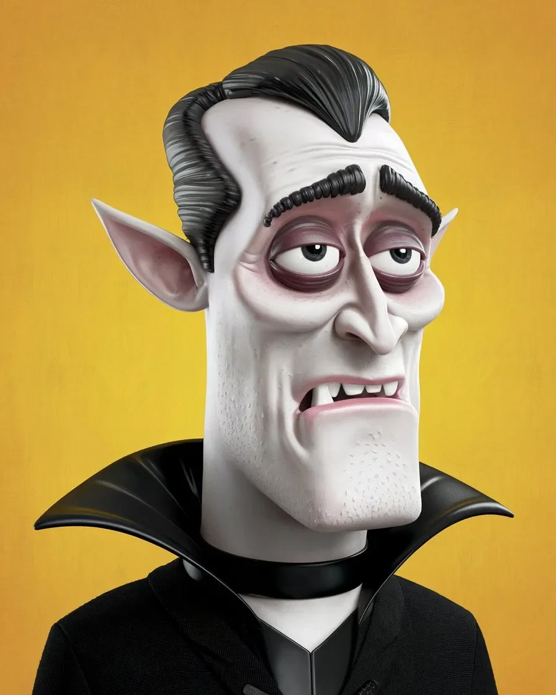

불멸에 대해 아무도 말해주지 않는 것은 그것에 품위가 전혀 없다는 것입니다. 정말 하나도 없죠. 예를 들어, 저는 방금 어떤 사람을 울타리 기둥으로 찔렀습니다.
[The thing no one tells you about immortality is that there’s no dignity in it. Like, zero. Case in point: I just impaled a guy with a fence post.]
사실, 그건 그의 잘못이었습니다. 어느 정도는요. 그가 뛰지 말았어야 했거든요. 이건 “포식자로부터 도망가지 마라"라는 의미가 아니라 말 그대로 그가 뛰지 말았어야 했다는 뜻입니다. 제가 따라잡았을 때 그 녀석은 이미 헐떡거리고 있었어요. 마치 처음으로 유산소 운동을 발견한 개처럼 숨을 헐떡이고 있었죠. 그리고 저는요? 약간 협응력이 떨어지는 언데드 우사인 볼트를 상상해 보세요.
[Now, to be fair, it was his fault. Kind of. See, he shouldn’t have been running. I’m not saying that in a "don’t run from predators” way—I mean literally, he shouldn’t have been running. Dude was already wheezing when I caught up, panting like a dog who just discovered cardio for the first time. Then there’s me, right? Picture the undead Usain Bolt with slightly worse coordination.]
이렇게 끝나길 계획하지 않았습니다. 사실, 제 저녁 계획은 더 조용할 예정이었어요. 살짝 들어가서 피를 조금 마시고, 그 불쌍한 녀석에게 두통과 철분 보충제에 대한 갈망만 남기고 떠나려고 했죠. 하지만 아니요. 이 녀석이 꼭 장면을 만들어야 했습니다. 먼저, 그는 저를 강도 짓 하려고 했어요 - 네, 알아요, 웃기죠 - 그리고 제가 송곳니를 조금 보이자, 그는 도망쳤습니다.
[I didn’t plan for it to end like this. In fact, my whole evening was supposed to be more low-key. Slip in, take a little blood, leave the poor bastard with a headache and a craving for iron supplements. But no. This guy had to make a scene. First, he tries to mug me—yeah, I know, hilarious—and then, when I show a little fang, he bolts.]
그래서 지금 저는 여기 서 있습니다. 그의 축 늘어진 몸 위에 서서, 가슴에 박힌 울타리 기둥 반쪽을 바라보고 있죠. 제 인생에서 가장 빛나는 순간은 아니네요.
[So now here I am, standing over his limp body, with half a fence post jammed into his chest. Not one of my finer moments.]
“농담이겠지,” 저는 특별히 누구에게랄 것도 없이 중얼거립니다. 그의 주변에 고이는 피를 내려다보면서요. 부츠로 그 녀석을 찌르며 확실히 죽었는지 확인합니다. 몇 세기를 살았으면 이런 사냥 일에 더 능숙해졌을 거라고 생각하겠지만, 아니에요. 여전히 엄청 서툴러요.
[“You gotta be kidding me,” I mutter to no one in particular, staring down at the blood pooling around him. I poke the guy with my boot, just to make sure he’s good and dead. You’d think after a couple centuries, I’d get better at this whole hunting thing. But nah. Still clumsy as hell.]
한 걸음 뒤로 물러서서 코트에 손을 닦으며 태연한 척 합니다. 마치 발 밑에 인간 케밥이 없는 것처럼요. 문제는, 제가 그를 죽일 생각이 아니었다는 겁니다. 계획이 있었거든요, 아시겠죠? 그를 미끼로 사용해서 그의 동료 몇 명을 끌어내고, 그들을 하나씩 제거하려고 했어요. 이제 제 손에는 시체 하나만 남았고, 저는 뒷정리를 정말 싫어합니다.
[I take a step back, wiping my hands on my coat, trying to look casual—like there isn’t a human kebab at my feet. The thing is, I wasn’t supposed to kill him. I had plans, y'know? Use him as bait, flush out a couple of his buddies, then pick them off one by one. Now I’ve just got a corpse on my hands, and I hate cleanup.]
다음에 무엇을 해야 할지 생각하기도 전에, 뒤에서 무언가를 듣습니다. 희미하지만 분명합니다 - 누군가 달리는 소리예요. 제기랄.
[Before I can figure out what to do next, I hear something behind me. It’s faint, but unmistakable—the sound of someone running. Crap.]
돌아서자 마침 또 다른 남자가 골목을 달려가는 모습이 보입니다. 당연하죠. 당연히 그에게 친구가 있었겠죠. 이 녀석은 더 작고 빠르지만, 저는 여전히 더 빠릅니다. 그를 쫓아가려는 순간, 옆구리에 날카로운 통증이 터집니다.
[I spin around, just in time to see another guy sprinting down the alley. Of course. Of course he had a friend. This one’s smaller, faster, but I’m faster still. I’m about to take off after him when a sharp pain explodes in my side.]
혼란스러워하며 아래를 내려다보니 갈비뼈에 꽂힌 칼자루가 보입니다.
[I look down, confused for a second, and see the hilt of a knife sticking out from my ribs.]
“오, 이 자식아.” 저는 칼날을 빼내며 신음합니다. 피—제 피가—짙고 진하게 보도 위로 떨어집니다. 치명적이진 않아요. 전혀요. 하지만 젠장, 따갑네요.
[“Oh, you little shit.” I groan, pulling the blade free. Blood—my blood—drips onto the pavement, dark and thick. It’s not fatal. Not even close. But damn, it stings.]
두 번째 녀석은 여전히 달리고 있고, 어깨 너머로 힐끗거리며 아마도 제가 죽어 쓰러지거나 불타오르거나 다른 할리우드식 넌센스를 기대하고 있겠죠. 당연히 그렇지 않습니다. 하지만 이 상황 전체가 점점 짜증나기 시작합니다. 저는 사후 세계에서 이런 귀찮은 일을 겪고 싶지 않아요.
[The second guy is still running, glancing over his shoulder, probably expecting me to drop dead or burst into flames or some other Hollywood nonsense. I don’t, obviously. But the whole situation is starting to annoy me. I don’t need this kind of aggravation in my afterlife.]
“좋아,” 저는 칼을 옆으로 던지며 중얼거립니다. “쉽게 잡히지 않으려고? 그럼 한번 해보자고.”
[“Fine,” I mutter, tossing the knife aside. “You wanna play hard to get? Let’s play.”]
순식간에 그를 따라잡습니다. 한 손으로 그의 어깨를 잡아 돌리고 가장 가까운 벽에 그를 세게 밀쳐붙입니다. 그는 발버둥치며 저를 차내려고 하지만, 이제 더 이상 부드럽게 대할 기분이 아닙니다. 그의 머리가 벽돌에 부딪히는 소리는 축축하고, 그 소리에 제 송곳니가 배고픔으로 가려워집니다. 이제 피 냄새가 납니다. 진하고 구리 냄새 나는. 그 냄새가 저를 부르고 있지만, 저는 망설입니다.
[I’m on him in seconds. One hand grabs his shoulder, spinning him around, and I slam him into the nearest wall. He’s thrashing, trying to kick me off, but I’m not in the mood to be gentle anymore. His head cracks against the bricks, a wet sound that makes my fangs itch with hunger. I can smell the blood now, thick and coppery. It’s calling to me, but I hesitate.]
네, 저는 화가 났지만 괴물은 아닙니다. 정말로 아니에요. 이 녀석은… 죽을 만한 짓을 하지 않았을 겁니다. 아마도요. 솔직히 말하자면, 저는 도덕적 계산에 그다지 능숙하지 않습니다. 잠시 그를 쳐다보며 내 안에서 갉아먹는 배고픔의 무게를 느낍니다. 긴 밤이었고, 저는 배고픕니다. 조금만 취할 수도 있겠죠. 그를 기절시킬 정도로만요. 그는 살 수 있을 겁니다. 아마도요.
[I’m pissed off, yeah, but I’m not a monster. Not really. This one… he doesn’t deserve to die. Probably. I mean, if I’m being honest, I’m not great at moral calculus. I stare at him for a second, feeling the weight of the hunger gnawing at my insides. It’s been a long night, and I’m hungry. I could take just a little. Enough to knock him out. He’d live. Probably.]
하지만 저는 “아마도"가 보통 엉망이 된다는 걸 배웠습니다. "울타리 기둥에 찔린” 정도로 엉망진창이 되죠. 오늘 밤 두 구의 시체를 설명할 기분은 아닙니다.
[But I’ve learned that “probably” tends to get messy. Like “impaled with a fence post” messy. I’m not in the mood to explain two bodies tonight.]
그때 사이렌 소리가 들립니다.
[Then I hear sirens.]
젠장.
[Shit.]
물론 누군가가 경찰을 불렀겠죠. 왜냐하면, 아무래도 제가 한 번이라도 조용히 식사를 할 수 없나 봅니다. 바보 같은 녀석이 911에 전화를 걸지 않고서는요.
[Of course, someone called the cops. Because, apparently, I can’t have one quiet meal without some idiot dialing 911.]
마음이 바뀌기 전에 그 녀석을 놓아주자, 그는 의식은 없지만 살아있는 채로 바닥에 쓰러집니다. 마지막으로 그를 한 번 더 쳐다봅니다 - 반은 짜증나고 반은 후회스럽게 - 그리고 누군가가 저를 제대로 보기 전에 재빨리 그림자 속으로 사라집니다.
[I drop the guy before I can change my mind, and he slumps to the ground, unconscious but alive. I give him one last glance—half annoyed, half regretful—then bolt, disappearing into the shadows before anyone gets a good look at me.]
불멸에는 품위가 없지만, 장점은 있습니다. 두 블록 떨어진 곳에서 울타리 기둥에 찔린 시체가 왜 있는지 경찰에게 설명할 필요가 없다는 것처럼요.
[There’s no dignity in immortality, but there are perks. Like not having to explain to the cops why there’s a dead guy impaled on a fence post two blocks away.]
어둠 속으로 녹아들면서, 항상 그렇듯 배고픔이 저를 갉아먹고 있지만, 이 모든 상황의 부조리함에 웃음이 나옵니다. 저는 몇 백 년을 살았고, 이제는 이 사냥 일에 능숙해졌을 거라고 생각하겠죠. 하지만 아니에요. 여전히 여기서 울타리 기둥에 걸려 넘어지고 길거리 깡패들에게 칼에 찔리고 있습니다.
[As I melt into the darkness, the hunger gnawing at me like it always does, I can’t help but laugh at the absurdity of it all. I’ve been alive for a couple hundred years, and you’d think by now I’d have this hunting thing down. But no. Still out here, tripping over fence posts and getting stabbed by street punks.]
코트에 말라붙은 피를 내려다보며 한숨을 쉽니다.
[I glance down at the blood drying on my coat and sigh.]
내일은 제대로 해낼 거예요. 아마도요.
[I’ll get it right tomorrow. Maybe.]
아마도요.
[Probably.]